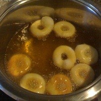

Hefedonuts

Hefedonuts schmecken, wie das beliebte Kleingebäck aus USA schmecken muss. Hier das Rezept für den süßen Genuss.
Zutaten
- 150 Gramm Butter
- 4 Stück Eier
- 50 Gramm Hefe
- 1 Kilogramm Mehl
- 1/2 Liter Milch
- 2 Prise Salz
- 100 Gramm Zucker
Zubereitung
- Das Mehl in eine Schüssel geben, in der Mitte eine Vertiefung hineindrücken und dort die Hefe hineinbröckeln. Zucker darüberstreuen.
- Die restlichen Zutaten auf dem Mehlrand verteilen und die Schüssel mit einem Geschirrtuch abdecken. 1/2 Stunde an einem warmen Ort gehen lassen. Alles miteinander verkneten, Schüssel wieder abdecken und eine weitere halbe Stunde gehen lassen, bis sich das Volumen des Teigs etwa verdoppelt hat.
- Kurz durchkneten, dann ein Stück Teig abstechen, auf den Zeigefinger stecken und den Teig um den Finger wirbeln, so dass ein Kringel entsteht. So weitermachen, bis der Teig aufgebraucht ist. Die fertigen Donuts unter ein Tuch legen. Dann nochmal 1 Stunde ruhen lassen.
- Öl in der Fritteuse erhitzen und alle Donuts hellbraun backen. Kurz abkühlen lassen und danach mit Zucker bestreuen.